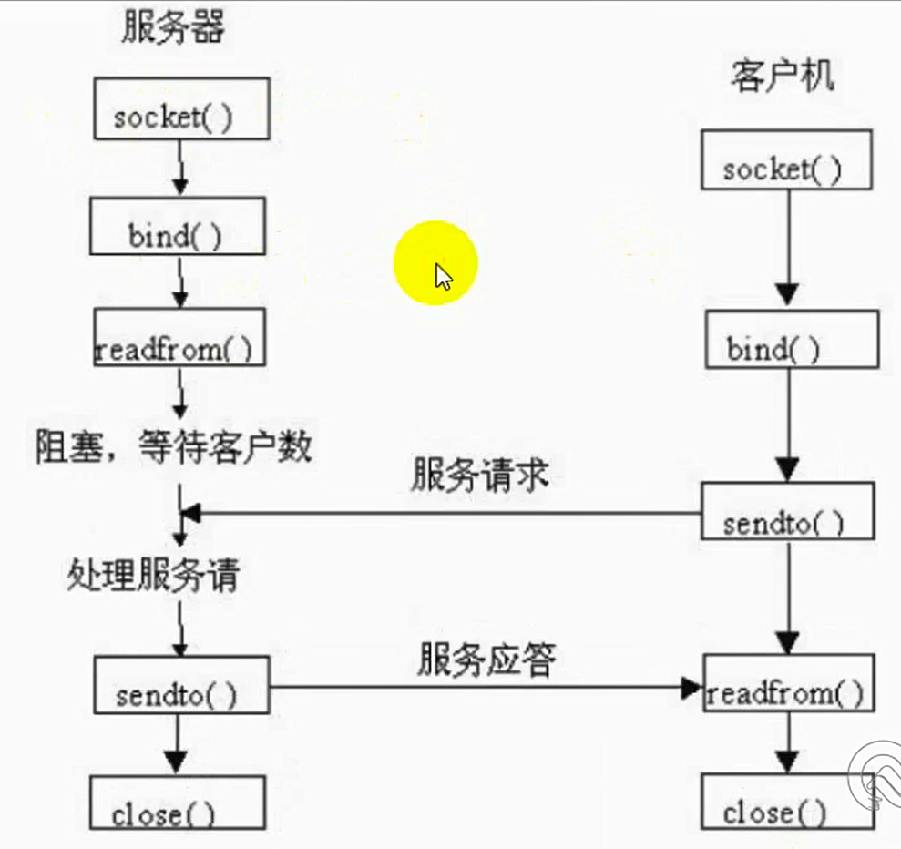

UDP协议
TCP通信过程

UDP服务端搭建
# -*- coding:utf-8 -*- import socket import time udpServer = socket.socket(socket.AF_INET, socket.SOCK_DGRAM) udpServer.bind(("", 8000)) print("UDP服务器已开启......") a = 0 while a == 0: while True: con, add = udpServer.recvfrom(1024) print(add[0], "已经成功连接...") if con.decode("utf-8") == 'q': print("与一个客户端断开连接......") print("UDP服务器开启中......") break print(con.decode("utf-8")) data = input(">>>") udpServer.sendto(data.encode("utf-8"), add) if data == 'q': print("正在关闭UDP服务器，请稍后...") time.sleep(1) print("已关闭...") a = 1 break udpServer.close()UDP客户端搭建
# -*- coding:utf-8 -*- import socket import time udpClient = socket.socket(socket.AF_INET, socket.SOCK_DGRAM) udpClient.bind(("", 8001)) print("已成功连接UDP服务器......") while True: data = input(">>>") udpClient.sendto(data.encode("utf-8"), ("127.0.0.1", 8000)) if data == 'q': print("正在断开连接，请稍后...") time.sleep(1) print("已断开...") break info = udpClient.recv(1024) if info.decode("utf-8") == 'q': break print(info.decode("utf-8")) udpClient.close()